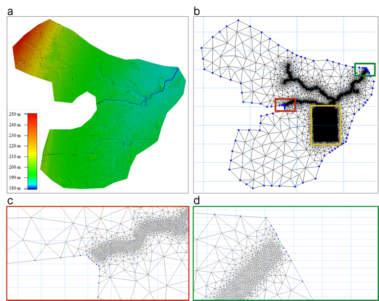

Flood Science
Flood conditions at Detroit Arsenal depend on the surrounding watershed and its infrastructure. This team links rainfall, runoff, river flow, and urban drainage to study inundation and its uncertainty.
Led by Valeriy Ivanov
Flood prediction across connected systems
The team develops detailed hydrologic and hydrodynamic models for Detroit Arsenal and the Red Run watershed. These models represent interactions among surface flow, river channels, buildings, and stormwater infrastructure. Research on the 2014 flood shows why connectivity between these systems matters when assessing inundation.
The forecasting work combines physical simulations, ensemble precipitation, observations, and machine learning. A published synthetic study examines how sparse inundation measurements can support map reconstruction and short-range flood forecasts. The broader effort connects installation-scale inundation modeling with streamflow prediction across larger regions.

Connections Across the Project
The team translates precipitation ensembles into flood scenarios for uncertainty analysis, behavioral research, and decision-support design. Detroit Arsenal’s needs help define the quantities and timescales that matter.